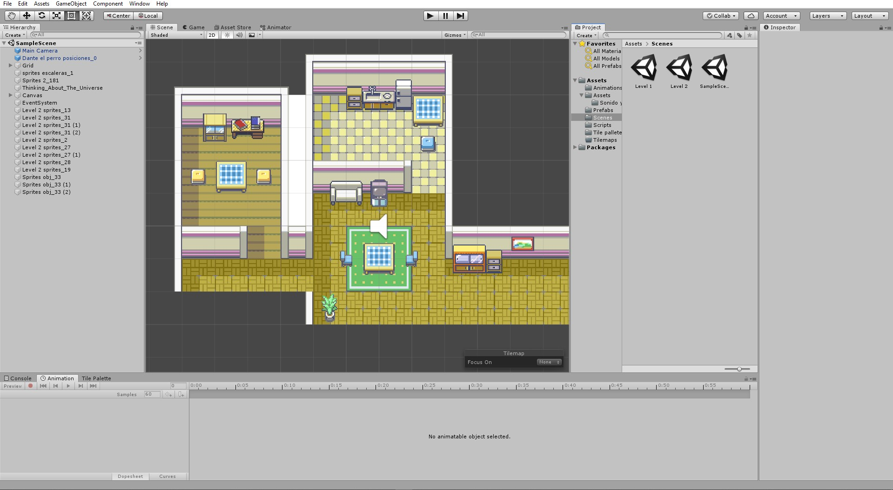

Dog tales
Este fue un proyecto en equipo desarrollado para la universidad. El objetivo era simple, hacer un juego conforme a lo que habíamos aprendido en clase, usando Unity. Es un juego que también es simple, pero sirvió de ayuda para aprender lo básico en la creación de videojuegos. Realmente el mayor problema que tuvimos para hacerlo, fue el balance de dificultad y la incorporación de los “assets”. En cuanto a la dificultad, se resolvió haciendo que varias personas probaran el juego y nos dijeran lo que se les dificultaba, y en cuanto a los assets, los tuvimos que implementar de una forma poco convencional, pero que funcionó.
